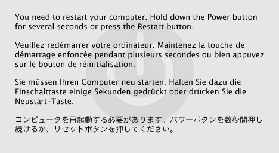

| ADC Home > Reference Library > Technical Notes > Darwin > Kernel > | |
|
What is a Kernel Panic?In UNIX, a panic is an unrecoverable system error detected by the kernel as opposed to similar errors detected by user space code. It is possible for kernel code to indicate such a condition by calling the What Does a Panic Look Like?A panic is typically indicated by the multi-lingual panic alert shown in Figure 1. After restarting the system, a log file named with the date and time of the panic should be present in Figure 1: Mac OS X panic alert.  Other behaviors can be specified by setting flags in the The most common use of Note: Prior to Mac OS X 10.5 Leopard, a panic log is not written to disk if remote kernel debugging has been enabled. In this case, you can attach to the panicked machine with GDB and use the Note: The panic alert is not displayed if verbose booting has been enabled, either by setting the Basics of Processor Exception Handling in the Mac OS X KernelAn exception is a condition encountered by the processor that requires special processing. Intel Processor Exception HandlingOn Intel IA-32 and Intel 64 architecture processors, each architecturally-defined exception is assigned a unique identification number called a vector. The processor uses the vector assigned to an exception as an index into the interrupt descriptor table (IDT). The IDT provides the entry point to the exception handler. Some of the processor registers are stored on the stack before control is transferred to the exception handler. Exceptions are classified as faults, traps, and aborts depending on the way they are reported and whether the instruction that caused the exception can be restarted without loss of program continuity. The most common exceptions are:
Details on exception handling on Intel processors can be found in Chapter 5 "Interrupt and Exception Handling" of the document Intel 64 and IA-32 Architectures Software Developer’s Manual, Volume 3A: System Programming Guide, Part 1. The processor registers that are shown in a panic log are:
Details on the Intel 64 and IA-32 register sets can be found in Chapter 3 "Basic Execution Environment" of the document Intel 64 and IA-32 Architectures Software Developer’s Manual, Volume 1: Basic Architecture. The Mac OS X kernel follows this execution flow when handling an Intel 64 or IA-32 exception:
The functions Note: The symbol PowerPC Processor Exception HandlingThe PowerPC microprocessor family handles exceptions by switching to supervisor state, saving the processor state to certain registers, and then jumping to an exception handler routine. Each major type of exception (data memory access, alignment, etc.) has its own exception vector located at an absolute address defined in the PowerPC architecture. The most common exceptions are:
Details on PowerPC exception handling can be found in Chapter 6 of the document PowerPC Microprocessor Family: The Programming Environments For 32-Bit Microprocessors (hereafter referred to as TPE). The processor registers that are shown in a panic log are:
Details on the PowerPC register set can be found in TPE Chapter 2. The Mac OS X kernel follows this execution flow when handling a PowerPC exception:
The last function ( Panic LogsHow to Read the Panic Log from an Intel-Based MacListing 1 is a typical panic display from an Intel-based Macintosh computer running Mac OS X 10.5.4. Line numbers have been added for ease of reference. Listing 1: Example Intel panic log. 1 panic(cpu 0 caller 0x001A8CD4): Kernel trap at 0x223ab275, type 14=page fault, registers: 2 CR0: 0x8001003b, CR2: 0xdeadbeef, CR3: 0x01251000, CR4: 0x00000660 3 EAX: 0xdeadbeef, EBX: 0x0049be30, ECX: 0x0050d444, EDX: 0x00534da0 4 CR2: 0xdeadbeef, EBP: 0x220dbe48, ESI: 0x06d59600, EDI: 0x02cecd00 5 EFL: 0x00010206, EIP: 0x223ab275, CS: 0x00000008, DS: 0x032f0010 6 Error code: 0x00000002 7 8 Backtrace, Format - Frame : Return Address (4 potential args on stack) 9 0x220dbc48 : 0x12b0fa (0x4592a4 0x220dbc7c 0x133243 0x0) 10 0x220dbc98 : 0x1a8cd4 (0x46280c 0x223ab275 0xe 0x461fbc) 11 0x220dbd78 : 0x19ede5 (0x220dbd90 0x2cecd00 0x220dbe48 0x223ab275) 12 0x220dbd88 : 0x223ab275 (0xe 0x48 0x61330010 0x31340010) 13 0x220dbe48 : 0x410db2 (0x6d59600 0x2cecd00 0x13315e 0x1331fa) 14 0x220dbea8 : 0x412c47 (0x2cecd00 0x6d59600 0x49be30 0x1) 15 0x220dbf28 : 0x4124ab (0x2cecd00 0x3312740 0x0 0x3f05c9) 16 0x220dbf78 : 0x411127 (0x2cecd00 0x8 0x220dbfac 0x1) 17 0x220dbfc8 : 0x19ebdc (0x30db910 0x0 0x1a20b5 0x3b3e5d0) 18 Backtrace terminated-invalid frame pointer 0 19 Kernel loadable modules in backtrace (with dependencies): 20 com.apple.dts.driver.PanicDriver(1.1)@0x223aa000->0x223abfff 21 22 BSD process name corresponding to current thread: kernel_task 23 24 Mac OS version: 25 9E17 26 27 Kernel version: 28 Darwin Kernel Version 9.4.0: Mon Jun 9 19:30:53 PDT 2008; root:xnu-1228.5.20~1/RELEASE_I386 29 System model name: MacPro1,1 (Mac-F4208DC8) 30 ethernet MAC address: 00:17:f2:00:00:00 31 ip address: 192.0.2.1 32 33 Waiting for remote debugger connection. For each line of the panic log, the name of the kernel source file and function that displays that line is given, followed by an explanation of the information on that line. Line 1:
The Back to Listing 1 Line 2: Contents of registers Back to Listing 1 Line 3: Contents of registers Back to Listing 1 Line 4: Contents of registers Back to Listing 1 Line 5: Contents of registers Back to Listing 1 Line 6:
Common error code values for exception vector 14 are Back to Listing 1 Line 7: Line 8: This is the actual stack backtrace. Each line shows the address of the stack frame, a colon ":", the return address saved in that frame, then four potential arguments in the stack frame enclosed in parentheses. The first stack frame is located using the value of the stack pointer ( Details on how the stack is used by Mac OS X can be found in the document Mac OS X ABI Function Call Guide. The backtrace is typically the most useful information in a panic log because it can be used to reconstruct the call chain that led to the exception. This is discussed in the next section Isolating the Crash. Back to Listing 1 Lines 9 through 18: Back to Listing 1 Line 19: This looks at the addresses in the backtrace and prints out the module name, version, and the starting and ending addresses of each kernel loadable module in the backtrace. (A kernel loadable module is simply the executable portion of a kernel extension, or KEXT.) It also prints out the same information for the dependencies of each kernel extension. The module name and version is the same as that shown by the Back to Listing 1 Line 20: Back to Listing 1 Line 21: Line 22: If the current thread originated from within the kernel, the task name shown is Back to Listing 1 Line 23: Line 24: Line 25: The build number is obtained from the kernel global variable Back to Listing 1 Line 26: Back to Listing 1 Line 27: Line 28: This is the value of the kernel global variable The string To see the version of a running kernel, use the Listing 2: Displaying the kernel version. $ sysctl kern.version kern.version = Darwin Kernel Version 9.4.0: Mon Jun 9 19:30:53 PDT 2008; root:xnu-1220.5.20~1/RELEASE_I386 The steps to build a custom kernel can be found in the chapter Building and Debugging Kernels of the document Kernel Programming Guide. Back to Listing 1 Line 29: The model name gives a high-level description of the panicked system. The first part Back to Listing 1 Line 30: This is the built-in Ethernet MAC address of the panicked machine. This and the IP address (line 31) are used to establish a remote debugging session. Note: This line is displayed on the screen only; it is not included in panic log files on disk. Back to Listing 1 Line 31: This is the IP address of the panicked machine. This and the Ethernet MAC address (line 30) are used to establish a remote debugging session. Note: This line is displayed on the screen only; it is not included in panic log files on disk. Back to Listing 1 Line 32: Line 33: At this point the system is waiting for a connection from a remote debugger. Back to Listing 1 How to Read the Panic Log from a PowerPC-Based MacListing 3 is a typical panic display from a PowerPC-based Macintosh computer running Mac OS X 10.5.4. Line numbers have been added for ease of reference. Listing 3: Example PowerPC panic log. 1 Unresolved kernel trap(cpu 0): 0x300 - Data access DAR=0x00000000DEADBEEF PC=0x000000001918F504 2 Latest crash info for cpu 0: 3 Exception state (sv=0x1a85d500) 4 PC=0x1918F504; MSR=0x00009030; DAR=0xDEADBEEF; DSISR=0x42000000; LR=0x1918F4F0; R1=0x19997C50; XCP=0x0000000C (0x300 - Data access) 5 Backtrace: 6 0x1918F4F0 0x0034380C 0x00344960 0x00346810 0x00345930 0x000B05D4 7 Kernel loadable modules in backtrace (with dependencies): 8 com.apple.dts.driver.PanicDriver(1.1)@0x1918e000->0x1918ffff 9 Proceeding back via exception chain: 10 Exception state (sv=0x1a85d500) 11 previously dumped as "Latest" state. skipping... 12 Exception state (sv=0x19f2ac80) 13 PC=0x00000000; MSR=0x0000D030; DAR=0x00000000; DSISR=0x00000000; LR=0x00000000; R1=0x00000000; XCP=0x00000000 (Unknown) 14 15 BSD process name corresponding to current thread: kernel_task 16 17 Mac OS version: 18 9E17 19 20 Kernel version: 21 Darwin Kernel Version 9.4.0: Mon Jun 9 19:36:17 PDT 2008; root:xnu-1228.5.20~1/RELEASE_PPC 22 System model name: PowerMac7,2 23 Memory access exception (1,0,0) 24 ethernet MAC address: 00:0a:95:00:00:00 25 ip address: 192.0.2.2 26 27 Waiting for remote debugger connection. For each line of the panic log, the name of the kernel source file and function that displays that line is given, followed by an explanation of the information on that line. Line 1:
The
The interpretation of Back to Listing 3 Line 2: Back to Listing 3 Line 3: PowerPC exception states are stored in data structures of type Back to Listing 3 Line 4:
Back to Listing 3 Line 5: Back to Listing 3 Line 6: This is the actual stack backtrace. The initial stack pointer is the value of GPR1 in the Details on how the stack is used by Mac OS X can be found in the document Mac OS X ABI Function Call Guide. The backtrace is typically the most useful information in a panic dump because it can be used to reconstruct the call chain that led to the exception. This is discussed in the next section Isolating the Crash. Back to Listing 3 Line 7: This looks at the addresses in the backtrace and prints out the module name, version, and starting and ending addresses of each kernel loadable module in the backtrace. (A kernel loadable module is simply the executable portion of a kernel extension, or KEXT.) It also prints out the same information for the dependencies of each kernel extension. The module name and version is the same as that shown by the Back to Listing 3 Line 8: Line 9: Each exception state is now dumped. The first one was already shown in lines 3 through 6 (note the same value of Back to Listing 3 Line 10: Back to Listing 3 Line 11: Back to Listing 3 Line 12: Same as line 3. Back to Listing 3 Line 13: Same as line 4. Back to Listing 3 Line 14: Line 15: If the current thread originated from within the kernel, the process name shown is Back to Listing 3 Line 16: Line 17: Line 18: The build number is obtained from the kernel global variable Back to Listing 3 Line 19: Line 20: Line 21: This is the value of the kernel global variable The string To see the version of a running kernel, use the The steps to build a custom kernel can be found in the chapter Building and Debugging Kernels of the document Kernel Programming Guide. Back to Listing 3 Line 22: The model name includes the product name and version of the panicked system. Back to Listing 1 Line 23: This line contains an exception message followed by the exception number, code, and subcode in parentheses.
Note: This line is displayed on the screen only; it is not included in panic log files on disk. Back to Listing 3 Line 24: This is the built-in Ethernet MAC address of the panicked machine. This and the IP address (line 25) are used to establish a remote debugging session. Note: This line is displayed on the screen only; it is not included in panic log files on disk. Back to Listing 3 Line 25: This is the IP address of the panicked machine. This and the Ethernet MAC address (line 24) are used to establish a remote debugging session. Note: This line is displayed on the screen only; it is not included in panic log files on disk. Back to Listing 3 Line 26: Line 27: At this point the system is waiting for a connection from a remote debugger. Back to Listing 3 Isolating the CrashAssume that one of your customers or testers had your kernel extension installed and experienced a kernel panic. Fortunately they sent you the panic log like the ones shown earlier. How can you go about finding the cause of the crash? The first thing to do is to run the same version of the operating system on a computer with the same processor architecture as the panicked machine. Use the OS, kernel, and KEXT version numbers from the panic log to confirm that you're running the correct versions. Next, take a quick glance at the kind of crash and in which kernel extension the crash occurred. Finally, the backtrace can be used to get a more precise picture of the sequence of calls that led up to the crash. To decipher the backtrace, it's necessary to create relocated symbol files for the kernel and each kernel extension listed in the backtrace. A new set of symbol files must be generated each time a kernel extension is loaded because the load addresses of the KEXT or its dependencies are likely to be different each time. Deciphering a Panic Log from an Intel-based MacIn our example, a page fault exception occurred with the instruction pointer containing The kernel and kernel extensions on a running Mac OS X system contain just enough symbolic information to resolve dependencies between them. In order to translate all of the return addresses in Mac OS X kernel code, download the Kernel Debug Kit corresponding to the version and build of Mac OS X on the panicked system. Kernel Debug Kits contain symbol-rich versions of the kernel and many I/O Kit families. Mount the Kernel Debug Kit disk image, and you're ready to go. Your own kernel extensions will already have full line number and function name information provided they were built using Xcode's Debug build configuration. On Mac OS X 10.5 and later, be sure the Generating symbol files is done using the kextload command as illustrated in Listing 4. The Alternatively, you can use the Note: While it's possible to perform cross-architecture remote kernel debugging, symbol files can only be generated on a system with the same architecture as the panicked system. Listing 4: Generating the symbol file using kextload. localhost:~ me$ kextload -c -e -k /Volumes/KernelDebugKit/mach_kernel -n -z -r /Volumes/KernelDebugKit/ -s /tmp PanicDriver/build/Debug/PanicDriver.kext/ kextload: notice: extension PanicDriver/build/PanicDriver.kext/ has debug properties set enter the hexadecimal load addresses for these modules: com.apple.dts.driver.PanicDriver: 0x223aa000 Listing 5: Generating the symbol file using createsymbolfiles. localhost:~ me$ /Volumes/KernelDebugKit/createsymbolfiles -s /tmp PanicDriver/build/Debug/PanicDriver.kext kextload: notice: extension PanicDriver/build/PanicDriver.kext/ has debug properties set enter the hexadecimal load addresses for these modules: com.apple.dts.driver.PanicDriver: 0x223aa000 This results in a separate symbol file for each module in Next, start GDB and load the symbol files using the Listing 6: Loading the symbol file into GDB. localhost:~ me$ gdb /Volumes/KernelDebugKit/mach_kernel GNU gdb 6.3.50-20050815 (Apple version gdb-960) (Sun May 10 10:38:33 UTC 2008) Copyright 2004 Free Software Foundation, Inc. GDB is free software, covered by the GNU General Public License, and you are welcome to change it and/or distribute copies of it under certain conditions. Type "show copying" to see the conditions. There is absolutely no warranty for GDB. Type "show warranty" for details. This GDB was configured as "i386-apple-darwin"... (gdb) set kext-symbol-file-path /tmp (gdb) add-kext PanicDriver/build/Debug/PanicDriver.kext add symbol table from file "/tmp/com.apple.dts.driver.PanicDriver.sym" (y or n) y Reading symbols from /private/tmp/com.apple.dts.driver.PanicDriver.sym...Reading symbols from PanicDriver/build/Debug/PanicDriver.kext.dSYM/ Contents/Resources/DWARF/PanicDriver...done. done. (gdb) Repeat the If your project is configured to produce Listing 7: Loading the symbol file into GDB when using stabs debugging information. localhost:~ me$ gdb /Volumes/KernelDebugKit/mach_kernel GNU gdb 6.3.50-20050815 (Apple version gdb-573) (Fri Oct 20 15:50:43 GMT 2006) Copyright 2004 Free Software Foundation, Inc. GDB is free software, covered by the GNU General Public License, and you are welcome to change it and/or distribute copies of it under certain conditions. Type "show copying" to see the conditions. There is absolutely no warranty for GDB. Type "show warranty" for details. This GDB was configured as "i386-apple-darwin"... (gdb) add-symbol-file /tmp/com.apple.dts.driver.PanicDriver.sym add symbol table from file "/tmp/com.apple.dts.driver.PanicDriver.sym" at (y or n) y Reading symbols from /tmp/com.apple.dts.driver.PanicDriver.sym...done. (gdb) In the case of I/O Kit C++ function names, you may find it helpful to unmangle the names to make them more readable. The command Display the instruction located at the instruction pointer (EIP) using the "examine memory as instruction" command Listing 8: Disassembling from the instruction pointer. (gdb) set print asm-demangle on (gdb) x/i 0x223ab275 0x223ab275 <com_apple_dts_driver_PanicDriver::start(IOService*)+77>: movl $0x7fff,(%eax) (gdb) Next, for each return address in the backtrace, disassemble the function containing that address using the command Listing 9: Decoding the backtrace. (gdb) disass 0x12b0fa Dump of assembler code for function panic: 0x0012af54 <panic+0>: push %ebp ... 0x0012b0f5 <panic+417>: call 0x1ae39f <Debugger> 0x0012b0fa <panic+422>: mov 0x4d5278,%eax ... (gdb) disass 0x1a8cd4 Dump of assembler code for function kernel_trap: 0x001a872a <kernel_trap+0>: push %ebp ... 0x001a8ccf <kernel_trap+1445>: call 0x12af54 <panic> 0x001a8cd4 <kernel_trap+1450>: add $0xcc,%esp ... (gdb) disass 0x19ede5 Dump of assembler code for function trap_from_kernel: 0x0019edcb <trap_from_kernel+0>: mov %esp,%eax ... 0x0019ede0 <trap_from_kernel+21>: call 0x1a872a <kernel_trap> 0x0019ede5 <trap_from_kernel+26>: mov %edi,%esp ... (gdb) disass 0x223ab275 Dump of assembler code for function _ZN32com_apple_dts_driver_PanicDriver5startEP9IOService: 0x223ab228 <com_apple_dts_driver_PanicDriver::start(IOService*)+0>: push %ebp ... 0x223ab272 <com_apple_dts_driver_PanicDriver::start(IOService*)+74>: mov -0xc(%ebp),%eax 0x223ab275 <com_apple_dts_driver_PanicDriver::start(IOService*)+77>: movl $0x7fff,(%eax) ... (gdb) disass 0x410db2 Dump of assembler code for function _ZN9IOService14startCandidateEPS_: 0x00410d3c <IOService::startCandidate(IOService*)+0>: push %ebp ... 0x00410dac <IOService::startCandidate(IOService*)+112>: call *0x2cc(%eax) 0x00410db2 <IOService::startCandidate(IOService*)+118>: xor %edx,%edx ... (gdb) disass 0x412c47 Dump of assembler code for function _ZN9IOService15probeCandidatesEP12OSOrderedSet: 0x004125a8 <IOService::probeCandidates(OSOrderedSet*)+0>: push %ebp ... 0x00412c41 <IOService::probeCandidates(OSOrderedSet*)+1689>: call *0x3c4(%eax) 0x00412c47 <IOService::probeCandidates(OSOrderedSet*)+1695>: mov %al,-0x3a(%ebp) ... (gdb) disass 0x4124ab Dump of assembler code for function _ZN9IOService14doServiceMatchEm: 0x00412334 <IOService::doServiceMatch(unsigned long)+0>: push %ebp ... 0x004124a5 <IOService::doServiceMatch(unsigned long)+369>: call *0x3c0(%eax) 0x004124ab <IOService::doServiceMatch(unsigned long)+375>: mov (%ebx),%eax ... (gdb) disass 0x411127 Dump of assembler code for function _ZN15_IOConfigThread4mainEPS_: 0x00411016 <_IOConfigThread::main(_IOConfigThread*)+0>: push %ebp ... 0x00411121 <_IOConfigThread::main(_IOConfigThread*)+267>: call *0x3d4(%edx) 0x00411127 <_IOConfigThread::main(_IOConfigThread*)+273>: jmp 0x411142 <_IOConfigThread::main(_IOConfigThread*)+300> ... (gdb) disass 0x19ebdc Dump of assembler code for function call_continuation: 0x0019ebc0 <call_continuation+0>: mov 0x4(%esp),%eax ... 0x0019ebda <call_continuation+26>: call *%eax 0x0019ebdc <call_continuation+28>: add $0x10,%esp ... (gdb) Then locate the function containing the instruction pointed to by the instruction pointer. In this example, this is the function Also examine the other disassembled functions, looking for the instruction immediately before the address from the backtrace. Note that this instruction should be some form of branch instruction. To understand why, recall that the backtrace is a listing of the return addresses saved prior to executing a function call. If the disassembly shows something other than a branch instruction, this is a clue that you may not have generated your symbol file correctly, or that the operating system or Kernel Debug Kit version does not match the panicked machine. (This guideline does not apply to the leaf function which contains the instruction that generated an exception.) Another handy technique is to use the "examine memory as instruction" command to disassemble instructions near the address from the backtrace as in Listing 10. Listing 10: Disassembling a block of instructions. (gdb) x/16i 0x19ebdc-32 0x19ebbc <thread_exception_return+12>: add %eax,(%eax) 0x19ebbe <thread_exception_return+14>: add %dl,0x424448b(%eax) 0x19ebc4 <call_continuation+4>: mov 0x8(%esp),%edx 0x19ebc8 <call_continuation+8>: mov 0xc(%esp),%ecx ... 0x19ebd9 <call_continuation+25>: push %edx 0x19ebda <call_continuation+26>: call *%eax 0x19ebdc <call_continuation+28>: add $0x10,%esp 0x19ebdf <call_continuation+31>: mov %gs:0x4,%eax ... One thing to be aware of when using this technique is that the first few instructions may not be correct because the disassembly is likely to begin in the middle of an instruction. Deciphering a Panic Log from a PowerPC-based MacIn our example, a data access exception occurred with the program counter containing The kernel and kernel extensions on a running Mac OS X system contain just enough symbolic information to resolve dependencies between them. In order to translate all of the return addresses in Mac OS X kernel code, download the Kernel Debug Kit corresponding to the version and build of Mac OS X on the panicked system. Kernel Debug Kits contain symbol-rich versions of the kernel and many I/O Kit families. Mount the Kernel Debug Kit disk image, and you're ready to go. Your own kernel extensions will already have full line number and function name information provided they were built using Xcode's Debug build configuration. On Mac OS X 10.5 and later, be sure the Generating symbol files is done using the kextload command as illustrated in Listing 11. The Alternatively, you can use the Note: While it's possible to perform cross-architecture remote kernel debugging, symbol files can only be generated on a system with the same architecture as the panicked system. Listing 11: Generating the symbol file using kextload. localhost:~ me$ kextload -c -e -k /Volumes/KernelDebugKit/mach_kernel -n -z -r /Volumes/KernelDebugKit/ -s /tmp PanicDriver/build/Debug/PanicDriver.kext kextload: notice: extension PanicDriver/build/Debug/PanicDriver.kext has debug properties set enter the hexadecimal load addresses for these modules: com.apple.dts.driver.PanicDriver: 0x1918e000 Listing 12: Generating the symbol file using createsymbolfiles. localhost:~ me$ /Volumes/KernelDebugKit/createsymbolfiles -s /tmp PanicDriver/build/Debug/PanicDriver.kext kextload: notice: extension PanicDriver/build/PanicDriver.kext/ has debug properties set enter the hexadecimal load addresses for these modules: com.apple.dts.driver.PanicDriver: 0x1918e000 This results in a separate symbol file for each module, named Next, start GDB and load the symbol files using the Listing 13: Loading the symbol file into GDB. localhost:~ me$ gdb /Volumes/KernelDebugKit/mach_kernel GNU gdb 6.3.50-20050815 (Apple version gdb-960) (Sun May 18 18:41:56 UTC 2008) Copyright 2004 Free Software Foundation, Inc. GDB is free software, covered by the GNU General Public License, and you are welcome to change it and/or distribute copies of it under certain conditions. Type "show copying" to see the conditions. There is absolutely no warranty for GDB. Type "show warranty" for details. This GDB was configured as "powerpc-apple-darwin"... (gdb) set kext-symbol-file-path /tmp (gdb) add-kext PanicDriver/build/Debug/PanicDriver.kext add symbol table from file "/tmp/com.apple.dts.driver.PanicDriver.sym"? (y or n) y Reading symbols from /private/tmp/com.apple.dts.driver.PanicDriver.sym...Reading symbols from PanicDriver/build/Debug/PanicDriver.kext.dSYM/ Contents/Resources/DWARF/PanicDriver...done. done. (gdb) Repeat the If your project is configured to produce Listing 14: Loading the symbol file into GDB when using stabs debugging information. localhost:~ me$ gdb /mach_kernel GNU gdb 6.3.50-20050815 (Apple version gdb-573) (Fri Oct 20 15:54:33 GMT 2006) Copyright 2004 Free Software Foundation, Inc. GDB is free software, covered by the GNU General Public License, and you are welcome to change it and/or distribute copies of it under certain conditions. Type "show copying" to see the conditions. There is absolutely no warranty for GDB. Type "show warranty" for details. This GDB was configured as "powerpc-apple-darwin"... (gdb) add-symbol-file /tmp/com.apple.dts.driver.PanicDriver.sym add symbol table from file "/tmp/com.apple.dts.driver.PanicDriver.sym" at (y or n) y Reading symbols from /tmp/com.apple.dts.driver.PanicDriver.sym...done. (gdb) In the case of I/O Kit C++ function names, you may find it helpful to unmangle the names to make them more readable. The command Display the instruction located at the program counter (PC) using the "examine memory as instruction" command Listing 15: Disassembling from the program counter. (gdb) set print asm-demangle on (gdb) x/i 0x1918F504 0x1918f504 <com_apple_dts_driver_PanicDriver::start(IOService*)+120>: stw r0,0(r2) (gdb) Next, for each return address in the backtrace, display the instruction located immediately prior to that address using the command Listing 16 shows the results of decoding the backtrace shown in Listing 3. Listing 16: Decoding the backtrace. (gdb) x/i 0x1918F4F0-4 0x1918f4ec <com_apple_dts_driver_PanicDriver::start(IOService*)+96>: bl 0x1918f56c <com_apple_dts_driver_PanicDriver::start(IOService*)+224> (gdb) x/i 0x0034380C-4 0x343808 <IOService::startCandidate(IOService*)+188>: bctrl (gdb) x/i 0x00344960-4 0x34495c <IOService::probeCandidates(OSOrderedSet*)+2228>: bctrl (gdb) x/i 0x00346810-4 0x34680c <IOService::doServiceMatch(unsigned long)+524>: bctrl (gdb) x/i 0x00345930-4 0x34592c <_IOConfigThread::main(_IOConfigThread*)+352>: bctrl (gdb) x/i 0x000B05D4-4 0xb05d0 <Call_continuation+16>: blrl (gdb) SummaryUsing the techniques discussed in this technote, it is possible to perform an effective post-mortem analysis of a kernel panic. While the information in a panic dump may have been cryptic at first, it should now be just another debugging tool available to the Mac OS X developer. ReferencesThe Design and Implementation of the 4.4BSD Operating System, McKusick et al., Addison-Wesley, 1996. Hello Debugger: Debugging a Device Driver With GDB Intel 64 and IA-32 Architectures Software Developer’s Manual, Volume 1: Basic Architecture, Intel Order Number 253665-027US, revised April 2008. Intel 64 and IA-32 Architectures Software Developer’s Manual, Volume 3A: System Programming Guide, Part 1, Intel Order Number 253668-027US, revised July 2008. PowerPC Microprocessor Family: The Programming Environments For 32-Bit Microprocessors, IBM document G522-0290-01 revised 02/21/2000. Programming Environments Manual For 32-Bit Implementations of the PowerPC Architecture, Freescale Semiconductor document MPCFPE32B, revision 3, 9/2005. Downloadables
Document Revision History
Posted: 2008-08-14 |
|